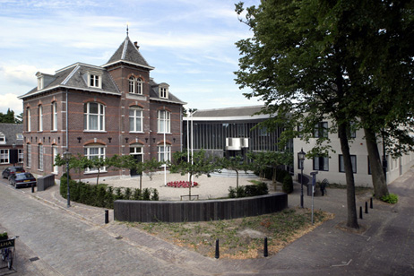
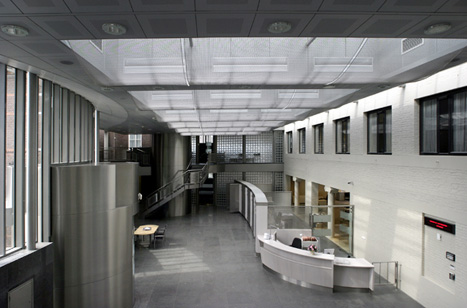
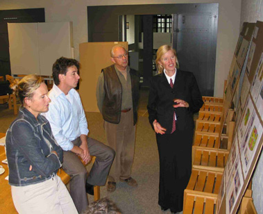
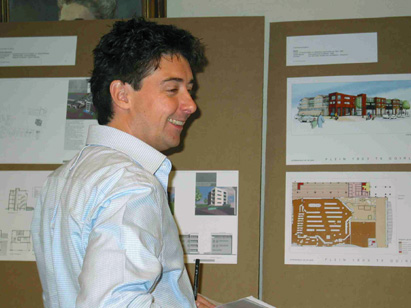
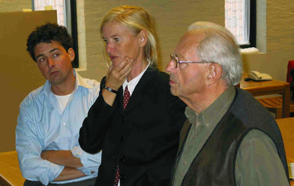
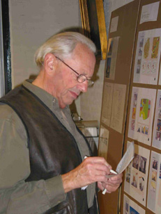
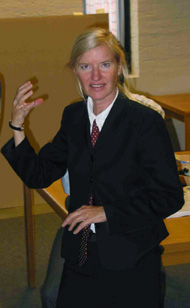
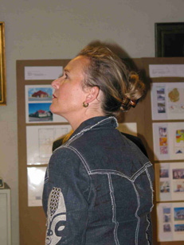

Juryverslag
|  |  |
{kind=link}
{kind=link}
Alle geselecteerde plannen zijn in 2002 aan de elf verschillende - aan
Welstandszorg Noord-Brabant verbonden - welstandscommissies ter advisering
voorgelegd. De selecties betreffen alle papieren plannen. Van daadwerkelijke
realisatie was toen nog geen sprake. Het risico dat een ontwerp geselecteerd
voor de Welstandsprijs al dan niet of in gewijzigde vorm wordt gerealiseerd
is altijd aanwezig. Dit is inherent aan de opzet van de Welstandsprijs.
Het is van belang te vermelden dat bouwplannen en geen gerealiseerde gebouwen
zijn vergeleken en beoordeeld. Het feit of een plan al dan niet gebouwd
is, heeft geen rol gespeeld in de uiteindelijke jurering.
De complexiteit van de opgave, inventiviteit en originaliteit in ontwerp
en concept werden door de jury belangrijker gevonden dan de daadwerkelijke
planpresentatie. Hoewel gezegd moet worden dat enkele plannen juist door
een minder sprekende presentatie niet de aandacht gekregen hebben die
ze verdienden. Beproefde planconcepten - hoe mooi soms ook uitgewerkt
- scoorden over het algemeen lager dan nieuwe.
Na het recordjaar 2002, met honderd acht geselecteerde plannen, viel
dit jaar de oogst wat tegen. Van de ruim 20.000 bouwplannen die het afgelopen
jaar werden voorgelegd aan de verschillende Brabantse welstandscommissies,
restten maandag 29 september 'slechts' achtenzeventig presentaties ter
jurering. In één dag moesten al deze plannen bekeken, becommentarieerd
en gejureerd worden.
Tijdens de jurering werden de plannen - integraal zoals zij door de architecten
en ontwerpers waren aangeleverd - per categorie beoordeeld. Na een gezamenlijke
rondgang langs alle plannen, kreeg de jury de gelegenheid de plannen nogmaals
individueel te bestuderen en de presentaties te voorzien van een schriftelijke
voorkeur. Afhankelijk van de omvang van de categorie betrof dit één,
drie tot vijf plannen. Vervolgens werden de verschillende scorelijstjes
met elkaar vergeleken. Plannen die door geen enkel of maar één
jurylid genoemd waren, werden verwijderd. De overgebleven ontwerpen werden
naast elkaar geplaatst. Deze werden na - soms fundamentele - meningsverschillen
open en inhoudelijk besproken. Toch kwam de jury vaak al na de eerste
ronde tot consensus.
|  |  |  |
{kind=link}
{kind=link}
{kind=link}
De jurering. Op de middelste foto Manou Huijbregts, de anderen worden hieronder vermeld.

Voor de achtste jurering van de Welstandsprijs, werd dit jaar het verbouwde en onlangs opgeleverde gemeentehuis in Oirschot als locatie gekozen. De verbouwing betreft ondermeer een geheel nieuwe entreezone met enkele vergaderkamers. Het ontwerp van Rob Lanfermeijer van architectenbureau Lanfermeijer Seelen Wijer betekent een moderne - bijna hightech - uitbreiding van het statige maar introverte - in de beste Bossche-School-traditie is vormgegeven - gemeentehuis.
Tijdens de jurering en na de soms pittige discussies bestond uiteindelijk in elke categorie consensus over de winnaar. Slechts in de categorie verbouwingen en uitbreidingen wist de jury geen keuze te maken. Daarom werden twee plannen ex aequo als winnaar aangewezen.
Aansluitend aan de jurering van de zeven categorieën werden de acht winnende plannen naast elkaar geplaatst en begon de spannende zoektocht naar het plan van het jaar en de winnaar van de Welstandstrofee. In open discussies werd het planaanbod steeds met één plan teruggebracht tot twee plannen overbleven. In een open stemming werd de voorkeur van de juryleden gevraagd. Allen wezen hetzelfde plan aan als plan van het jaar.
|  |  |  |
{kind=link}
{kind=link}
{kind=link}

Projectmatige woningbouw
Eén van de meest complexe categorieën is ongetwijfeld de categorie
projectmatige woningbouw. Naast een groot planaanbod - dit jaar werden
zestien plannen geselecteerd - moest de jury vaak moeilijk met elkaar
te vergelijken plannen beoordelen. Immers sociale woningbouw, maar ook
- dure - koopappartementen en zelfs een verzorgingscentrum waren geselecteerd.
Al bij de eerste selectie door de jury bleek de ingewikkeldheid van de
categorie. Nagenoeg alle plannen werden door één of meer
van de juryleden in hun persoonlijke top vijf opgenomen, zonder dat er
een duidelijke favoriet was. Na overleg en een extra rondgang langs de
presentaties bleven vijf plannen over.
Het eerste plan waarbij de jury langer stil bleef staan, was het ontwerp
van Inbo architecten Eindhoven voor de losse villa-appartementen in het
groen aan de Mr. Michelsstraat in Schijndel. De wat bescheiden presentatie
werd met name door de schaal van het tekenwerk als moeilijk 'leesbaar'
ervaren. Sandra Jacobs stelde: "Het lijkt alsof er net iets te veel
villa's zijn gepland, maar of deze hoge dichtheid past in de context is
nauwelijks te achterhalen." Waardering bestond wel voor de individuele
opzet van de villa's.
Ook beide woningbouwplannen in Boxtel oogstten zowel waardering als kritiek.
Over het ontwerp voor het plan aan de Achterberghstraat van Diederen Dirrix
van Wylick architecten - Eindhoven waarvan de interne ruimtelijke opzet
werd geroemd, maar het uiterlijk minder tot de verbeelding sprak, vond
Sandra Jacobs: "De ritmiek en het grafische totaalbeeld oogt strak
op tekening, maar ik denk dat het in werkelijkheid als minder prettig
wordt ervaren." Bij het plan aan de Baandervrouwenlaan van Architektenburo
Snijders Van Stekelenburg en Van Gisbergen - Boxtel stelde Fanny Aronsen:
"Geestig dat Magere Josje (de voormalige kerktoren, red.) in het
plan is verwerkt." Henk Goudappel deelde deze mening, maar vond "Als
je de toren wegdenkt is wat overblijft niet opvallend."
Fanny Aronsen wier achtergrond in Zweden ligt, waar de ontwikkeling van
milieubewuste woningen verder gevorderd is dan hier, was erg geïnteresseerd
in het plan voor acht milieuwoningen aan het Heiligenbos in Berghem-Zuid
van AA Zaltbommel. Ondanks dat de milieumaatregelen niet duidelijk gepresenteerd
waren, kreeg zij de indruk "dat er meer uitgehaald had kunnen worden."
Met name over de overdekte straat waren bedenkingen. Manou Huijbregts
stelde terecht de retorische vraag: "Hoe gemeenschappelijk is de
straat? Alleen vanuit de keuken heb je er zicht op." Ook het wat
smalle straatprofiel leek de jury een werking als ontmoetingsplaats, dan
wel verblijfsruimte in de weg te staan. Het argument dat de gang uit milieuoverweging
(warmtewinning) was gerealiseerd werd als uitgangspunt onderschreven,
maar de beperkte 'leefbaarheid' van de straat had als cruciaal tegenargument
belangrijker gevonden.
Als vijfde plan bleef het ontwerp van architectenbureau Gunneweg - 's-Hertogenbosch
voor vier woningen aan het Geerke in Heeswijk-Dinther over. Fanny Aronsen
prees het ontwerp: "Esthetisch. Uiterlijk in verhouding. Het is knap
dat de betrekkelijk bescheiden woningen zo'n ruimtelijkheid hebben."
Voor Sandra Jacobs waren de kleur- en materiaalkeuze als ook de ruimtelijkheid
doorslaggevend voor haar keuze. Toch plaatste de jury ook enkele kanttekeningen.
"Het is vreemd dat aan de voorzijde in de overbouw een berging is
geplaatst." Ook vond zij het jammer dat gezien het forse oppervlak
aan plat dak geen dakterrassen gecreëerd waren. "Dat je van
de eerste verdieping nergens naar buiten kunt is een gemiste kans".
In eerste instantie lukte het de jury niet een winnaar aan te wijzen.
Besloten werd de vijf plannen apart te zetten en ze aan het einde van
de jurering nogmaals te bestuderen. Nadat zij alle categorieën gejureerd
had, werd nogmaals gekeken naar de kanshebbende plannen in de projectmatige
woningbouw. Kon aanvankelijk de keuze moeilijk gemaakt kon worden, nu
werd in de tweede jureringronde het plan voor de vier woningen aan het
Geerke in Heeswijk-Dinther in opdracht van Woningstichting de Kleine Meierij
- Rosmalen ontworpen door Kees Gunneweg van het gelijknamige architectenbureau
als winnaar aangewezen. "Dit plan is uit de door ons geselecteerde
het meest evenwichtig", meende juryvoorzitter Goudappel.
Individuele (particuliere) woningbouw
De grootste categorie betrof dit jaar de individuele woningbouw. Maar
liefst negentien plannen waren in deze categorie geselecteerd. Het is
ook één van de leukste categorieën omdat de juryleden
zich over het algemeen het meest kunnen vereenzelvigen met de opdrachtgevers
en zich het best kunnen inleven in het ontwerp. Ondanks dit grote aanbod
was de jury al na de eerste ronde eensluidend in haar oordeel. Het ontwerp
voor het woonhuis voor de familie Vissers aan de Bredasebaan in Bladel
ontworpen door Joost van der Sande van het gelijknamige Bladelse architectenbureau
stond bij alle juryleden boven aan het lijstje. "Wat een schitterende
woning. Hier zou ik zo willen wonen," omschreef Sandra Jacobs haar
gevoel over de woning. Fanny Aronsen prees de soberheid en de geheel eigen
uitstraling. Henk Goudappel stelde: "De woning is terughoudend en
expressief in één. Compositorisch prachtig." Ook was
de jury gecharmeerd van de heldere plattegronden en massaopzet. "Het
plan oogt modern en strak zonder ergens streng of dwingend te zijn."
Ook opvallend vond de jury de woning voor de familie Helwegen In den Tuyn
in Drimmelen. Alle leden meenden dat de maquette mooier was dan de gerealiseerde
woning. Met name het achterwege laten van de expressieve dakrand, de toepassing
van standaard dakraamelementen en de net iets afwijkende kapvorm in de
gerealiseerde toestand waren hieraan debet.
De woning voor de heer en mevrouw Kratsborn-Heersema aan de Dennenlaan
in Oss ontworpen door Hans Semijn van het Bossche architectenbureau de
Twee Snoeken verdiende in ogen van de jury een vermelding. Hoewel de presentatie
het plan wat tekort deed, was met name Manou Huijbregts enthousiast over
het plan. "De ruimtelijke kwaliteit is prachtig. Trekken architecten
nog wel eens een 'trukendoos' open waardoor een gebrek aan terughoudendheid
ontstaat, dit plan straalt een heel mooie en plezierige soberheid uit."
De woning wordt ongetwijfeld een prachtig voorbeeld van het architectuuradagium
less is more.
In het afgelopen jaar is de volledig verbouwde paarse villa van de heer
en mevrouw Schrofer-Vettenburg aan de Eyndhoutsgaarde in Nuenen ontworpen
door architect Lex Kerssemakers - Lieshout op minder positieve wijze in
het nieuws gekomen. Enkele mensen hadden zich gestoord aan de kleurstelling
die in hun ogen te expressief en bedreigend was. De jury veegde de vloer
aan met deze opvatting. Zowel Fanny Aronsen als Sandra Jacobs, beiden
in het dagelijks leven continu met kleur bezig, roemde het plan. Sandra
Jacobs gaf een college kleurenleer door te stellen: "De gekozen paarsblauwe
kleur is een van de rustigste voor de ogen en harmonieert prachtig met
groen." Fanny Aronsen: "De verbouwing is een echte verbetering.
De kleurstelling is heel bijzonder en voegt zich schitterend in zijn omgeving.
Het zou een voorbeeld voor de hele wijk moeten zijn." Henk Goudappel
prees het plan door simpel te stellen dat: "De woning is van gedateerd
nu universeel".
Categorie verbouwingen en uitbreidingen
Bij het samenstellen van deze categorie bleek al een duidelijke tweedeling.
De ene helft betrof woninguitbreidingen en aanbouwen en de andere helft
van de plannen had betrekking op carports en tuinhuizen, met als enige
vreemde eend in de bijt de entreeluifel bij partycentrum de Ster in Nieuwkuijk.
Deze tweedeling was mede oorzaak dat de jury in deze categorie niet tot
een keuze kon komen. Het ontwerp voor een carport en berging aan de Moostdijk
in Neerkant, in opdracht van de heer en mevrouw Schepman ontworpen door
Van den Acker architecten - Deurne en de uitbreiding met een speel- en
muziekkamer van de woning van de heer en mevrouw Kiemeney aan de Gelderstraat
in Hilvarenbeek, ontworpen door Pierre van der Geld Architekten AVB BNA
- Hilvarenbeek, werden uitgeroepen tot (gezamenlijke) categoriewinnaar.
Naast deze twee plannen gooide ook de woninguitbreiding voor de familie
Mentink aan de Sleedoorn in Geldrop, ontworpen door Lefkaap - Geldrop
hoge ogen. "Een heel interessant plan, maar meer een interieuropgave
dan een plan dat op zogenoemde welstandsaspecten als de relatie met de
omgeving beoordeeld kan worden," volgens Henk Goudappel. Waaraan
Manou Huijbregts toevoegde: "De detaillering en de zorgvuldigheid
die in het interieur worden toegepast, zie je jammer genoeg niet overal
in het exterieur." Beiden waren het eens over de prachtige beleving
van binnenuit.
Over de speel-/muziekkamer aan de Gelderstraat stelde Fanny Aronsen: "Een
mooi exterieur. Goed geïntegreerd met het huis, maar toch anders
en nieuw. In al zijn eenvoud is het plan ruimtelijk", als voorbeeld
wees Manou Huijbregts op de relatie tussen grote pui en de 'luie' trap
naar het souterrain. Hij vervolgde: "De beslotenheid van de achtertuin
wordt ook groter, waardoor de tuin ruimtelijk interessanter wordt."
Sandra Jacobs sprak van een "prachtig tuinhuis", Henk Goudappel
zag referenties met een Japanse tempel en Manou Huijbregts vond het "een
prachtig lawaaihok" . Kortom een plan dat ondanks zijn ogenschijnlijke
eenvoud, heel rijk is.
Eugène van den Ackers ontwerp voor de carport en berging oogstte
ook lof wegens zijn eenvoud. "Het plan lijkt heel simpel. Het grote
gebaar is helder en ziet er goed uit. Knap!" stelde Sandra Jacobs.
"Met zoveel geknoei met carports en dergelijke is de zorgvuldigheid
hier een verademing. Alleen al door zijn voorbeeldfunctie is aandacht
belangrijk," volgens Henk Goudappel. "In alle bescheidenheid
een heel mooie carport," meende Manou Huijbregts. De jury is zeer
benieuwd naar het gerealiseerde plan.
De integratie met de bestaande woning in Hilvarenbeek en de voorbeeldfunctie
van de carport in Neerkant waren voor de jury aanleiding beide plannen
ex aequo aan te merken als categoriewinnaar.
Bouwen voor dienstensector en industrie
In voorgaande jaren werden gebouwen voor de dienstensector - kantoren,
scholen en dergelijke - en industriepanden gescheiden, dit jaar is ervoor
gekozen beide groepen samen te voegen. In totaal werden in de categorie
veertien plannen geselecteerd.
Bij de eerste rondgang langs de plannen werd met waardering gesproken
over het bedrijfsgebouw voor Intervet aan de Exportstraat in Boxmeer ontworpen
door Buro Staal/Christensen - Eindhoven. Met name de sculpturale massaopzet
en materiaaltoepassing als ook de naamsaanduiding die geïntegreerd
is in het plafond van de overkragende verdieping werden genoemd. Ook het
kantoorpand in Park Diepenvoorde in Waalre voor Hurks bouw - Eindhoven
ontworpen door EnEn architecten - Eindhoven werd besproken. Ondanks waardering
voor de vormgeving op zich vroeg de jury zich af of het gebouw door zijn
afmetingen niet te sterk zou detoneren in de omgeving.
Over het workshopgebouw aan de Batterijstraat in Lith voor Galerie Sous-Terre,
ontworpen door architectenbureau de Twee Snoeken - 's-Hertogenbosch waren
de meningen verdeeld. Fanny Aronsen vond het plan "landelijk en echt
Nederlands." Anderen vonden het plan minder helder: "Het plan
heeft zowel iets Bossche-School-achtigs als iets modernistisch."
Weinig commentaar op en veel lof voor het ontwerp had de jury wel van
een tuinpaviljoen aan de Procureursweg in Dongen. Dit plan ontworpen door
Grosfeld architecten - Breda voor Roosen tuinregie bv - Dongen sprak tot
de verbeelding. Fanny Aronsen stelde: "Het paviljoen ligt op een
centraal punt in de tuin en is prachtig in balans met het omringende water.
De reflectie van het pand in het water maakt het 'af'. De grondvorm is
enigszins ovaal, maar toch net niet. De open en dichtverhouding van de
gevel en de harde scheiding ertussen maken het plan erg spannend."
Het enige puntje van kritiek kwam van Henk Goudappel. "Het paviljoen
is de focus van het tuinontwerp. Het is spijtig dat het tuinontwerp niet
in de presentatie is opgenomen." Deze omissie is in het verslag recht
gezet.
Bouwen in een historische context
Deze categorie heeft in de loop der jaren de nodige namen gehad, maar
de omschrijving bouwen in een historische context dekt de lading het best.
Immers dit jaar werden onder meer de herbestemming van een rijksmonument,
een tweekapper in een historische straatwand en een oranjerie bij een
authentieke Jaren 20 woning geselecteerd. In totaal bestond de categorie
uit vijf - alle hoogwaardig vormgegeven - bouwplannen.
De orangerie bij het woonhuis van de heer en mevrouw Van Heesch aan de
Molenstraat in Beers ontworpen door Wim Kol architekt bna - Nijmegen werd
enthousiast ontvangen. Manou Huijbregts prees: "De orangerie is heel
mooi ingepast, waardoor een binnenhof ontstaat dat heel prettig zal zijn.
De bouwvolumes (van de woning en de orangerie, red.) verhouden zich goed
tot elkaar en tonen door de gekozen architectuur verwantschap." Henk
Goudappel vroeg zich af: "Als er sprake is van een echte orangerie
bevreemdt het me dat dit niet tot uiting wordt gebracht in de voorgevel.
Jammer."
Hans Koppers' ontwerp voor de herbestemming van een school tot woningen
aan de Voorstraat in Almkerk werd door alle juryleden geroemd. Sandra
Jacobs: "Het principe van hergebruik van een pand, onderschrijf ik
van harte. Zeker als het zo goed gedaan wordt als hier." Het handhaven
van de bestaande structuur waarbij de lokalen - en nu woningen - ontsloten
worden door een brede gang werd gewaardeerd. Ook de geringe aantasting
aan de buitenzijde werd onderschreven. "Het hergebruik met instandhouding
van de bestaande kwaliteiten is met eerbied gebeurd." De jury was
unaniem in de aanwijzing van dit plan tot categoriewinnaar.
(Ver)bouwen van boerderijen
Eenmalig, om ook het Jaar van de Boerderij mee te vieren, is de categorie
(ver)bouwen van boerderijen in het leven geroepen. De zoektocht naar kwalitatief
hoogwaardig vormgegeven boerderijverbouwingen, renovaties en restauraties
bleek geen eenvoudige opgave. In Brabant worden nog steeds (monumentale)
boerderijen op dubieuze wijze en zonder enig historisch besef gesloopt,
verbouwd of 'vernielbouwd'. Er is gezocht naar die plannen die tegen de
stroom in wel kwaliteiten bezitten. Helaas heeft dit geleid tot de schrale
oogst van slechts zes bouwplannen.
Binnen deze selectie viel de jury drie plannen op. De woonboerderij met
opstallen aan de Heistraat in Ulvenhout ontworpen door ir. Jaap de Groot,
architect BNA - Ulvenhout die ook de opdrachtgever is, sprak de jury aan.
Vooral de prachtig gedocumenteerde verbouwing van de Vlaamse schuur tot
woning was aanleiding voor de jury geruime tijd stil te staan bij dit
project. Henk Goudappel sprak van een 'Prachtige reconstructie'. Hij plaatste
een kanttekening bij de toepassing van een met keramische pannen gedekt
deel van het dak. "Ofschoon in de presentatie niet duidelijk wordt
hoe het er oorspronkelijk heeft uitgezien, is de toepassing van dakpannen
storend en lijkt ze willekeurig."
Ook de renovatie/herbestemming van de boerderij aan de Provincialeweg
Noord in Almkerk, waarin het voormalige bedrijfsgedeelte een monumentale
boerderij vier woningen geplaatst worden was spraakmakend. Het plan ontworpen
voor Variant ontwikkeling bv - Werkendam door Architectenburo Bikker -
Groot-Ammers kreeg lof voor de zorgvuldige oplossing aan de voorzijde
en kritiek voor de wat minder aansprekende achterzijde. Fanny Aronsen
stelde terecht maar vrij cru: "Aan de voorzijde is nauwelijks af
te zien dat hier achter vier woningen geplaatst zijn, maar de regelmaat
in de achtergevel is storend. Het lijkt bijna sociale woningbouw. Misschien
is het programma van eisen hieraan debet. Bij drie in plaats van vier
wooneenheden had makkelijker variatie aangebracht kunnen worden."
Ook pleitte de jury voor een open verkaveling. "Tuinen die mogelijk
met houten schuttingen worden afgeschermd passen niet bij zo'n monumentale
boerderij. Een gemeenschappelijke tuin is hier noodzaak."
Pierre van der Gelds ontwerp voor het verbouwen van een boerderij en restauratie
van de kapschuur van de heer en mevrouw Van Esch aan het Groot Loo in
Hilvarenbeek werd geprezen om de evenwichtige vormgeving. Henk Goudappel:
"Op elementaire, zorgvuldige wijze - en met de nodige eerbied - is
omgegaan met de oorspronkelijke gebouwen." Niet wegens de innovatieve
oplossingen, maar doordat de restauratie en renovatie op een verantwoorde
en zorgvuldige maar vooral overtuigende wijze zijn vormgegeven, meende
de jury unaniem dit plan tot categoriewinnaar te moeten aanwijzen.
Categorie ontwerpen van buurten en wijken
In deze categorie gold 'hoe kleiner de categorie hoe moeilijker de keuze'.
Geruime tijd werd over de drie plannen gesproken. De kwaliteiten van de
verschillende plannen werd onderkend. De begeleiding door de gemeente
van de planontwikkeling vrije sectorwoningen in Revershof (Lieshout) en
Strijp (Aarle-Rixtel) verdient in ogen van de jury navolging. "Het
uiteindelijke resultaat van de wijk mag geroemd worden. Zeker als bedacht
wordt dat een groot deel van het plan individuele opdrachtgevers en particuliere
woningbouw betreft." Toch vond de jury dit onvoldoende reden het
plan als categoriewinnaar aan te wijzen.
Het inrichtingsplan voor het Patronaat in Mierlo in opdracht van de gemeente
Mierlo ontworpen door Pouderoyen Compagnons - Nijmegen sprak ondanks de
prachtige presentatie minder aan. Het plaatsen van de kerk op een groen
plateau werd - mogelijk ten onrechte - als weinig Brabants ervaren. "Een
kerk hoort aan een plein met een kerkhof er naast en een kroeg er tegenover",
luidde de mening van de jury.
De herinrichting Berg/Weverstraat in Nuenen voor Woningbouwvereniging
Helpt Elkander - Nuenen ontworpen door Buro 5 - Maastricht betreft een
forse stedelijke invulling midden in Nuenen. "Het plan steekt heel
knap in elkaar," meende Henk Goudappel. Manou Huijbregts prees de
gedifferentieerdheid in de bebouwing: "De architectonische uitwerking
met voor ieder wat wils levert een knap plan. De differentiatie aan functies
en woningtypes zal voor een sociale diversiteit zorgen." Naast deze
sociale insteek is het plan op zich goed doordacht en prachtig uitgewerkt.

Plan van het jaar
Nadat de jury na twee vermoeiende sessies de acht categoriewinnaars had
gekozen, werd de vraag gesteld welke van de acht winnende plannen het
komende jaar de naam Plan van het Jaar mag gaan dragen.
De presentatiepanelen van de acht categoriewinnaars zijn naast elkaar
geplaatst en de jury kreeg tijd deze nogmaals uitgebreid te bestuderen.
In de stemprocedure was vooraf afgesproken dat elk jurylid een persoonlijk
onderbouwde Top Drie van elk jurylid een ranglijst zou geven. De uitkomst
sprak boekdelen. Van de in totaal twaalf uitgebrachte voorkeursstemmen
kregen het tuinpaviljoen in Dongen van Pascal Grosfeld en de woning in
Bladel ontworpen door Joost van der Sande zeven stemmen.
Omdat het plan van Joost van der Sande door drie van de vier juryleden
als eerste keuze werd aangewezen en door één jurylid als
tweede, stelde juryvoorzitter Henk Goudappel vast dat een tweede stemronde
niet noodzakelijk was.
Het komende jaar mag het plan voor het woonhuis voor de familie Vissers
aan de Bredasebaan in Bladel het predikaat titel Plan van het Jaar voeren.